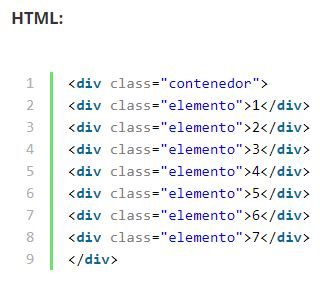
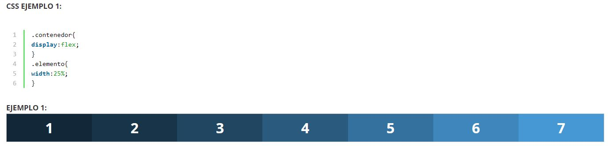
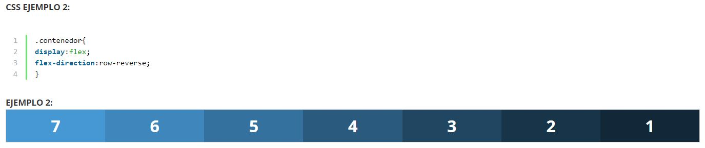
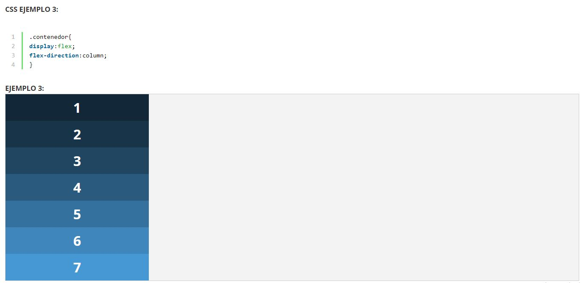
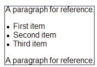
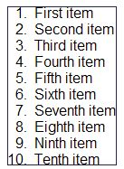

Propósito del sitio
En busca de ayudar a mitigar la problematica de enzeñar a distancia se busca construir un sitio Web que nos ayude a solucionar este problema con sitios interactivos y multimediales, para ellos vamos a tomar 5 temas principales para su constraccion empezando por Flex Box, Listas y enlaces
Los Flex Box
Los Flex Box nos aportan una solución que nos permite crear un conjunto de elementos flexibles que se adaptan automáticamente a su contenedor con el que podemos controlar parámetros como la alineación, dirección y ajuste de la fila según tamaños.
Ejemplos




Las Listas
Las Listas son un tipo de formar que se le da a unas palabras estas pueden ser ordenadas o no ejemplo.
Lista No Ordenada:

Lista Ordenada:

Con esto nos permite crear elementos en forma de lista ul para desordenada y ol para ordenanda que basicamente nos enumera el listado.
Los enlaces
los enlaces son lo mas imporante Ya que mediante los enlaces en HTML podemos comunicar una página con otra. De esta forma, enlazando documentos HTML podemos acabar tejiendo lo que es Internet. acontinuacion encontratar un video donde se explora mas afondo el tema y se puede observar como hacerlo y si queires ver mas videos como este puedes par sar por el canal su canal al final le dejare el link